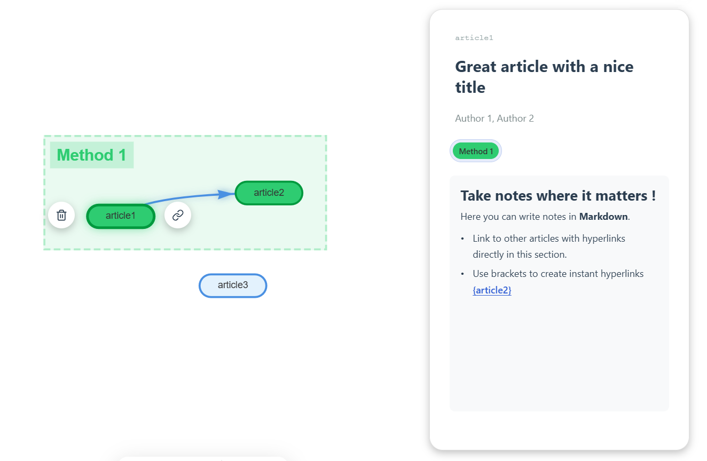

Visual workspace for serious literature reviews
Research that feels connected. organized. clear. shareable. connected.
Papergraph turns papers, notes, and relationships into a focused whiteboard for research. Build a graph that helps you understand, not just store, your literature.
Used in research workflows at


Search and import
Import articles from the sources researchers already use.
Start with identifiers and formats you already have in your workflow, then turn them into connected nodes in seconds.


Core workflow
Build your research graph from a clean import flow.
Add articles with a single action. Import from DOI, arXiv or BibTeX and let each source become a node in a graph built for reasoning, not just storage.

Reasoning in structure
Connect related papers with explicit semantics.
Draw edges between papers, label the relationship, and make your interpretation visible. Citations, methodological overlap, or disagreement can all live directly on the graph.

Visual organization
Organize with tags and zones without losing clarity.
Group themes spatially, color-code topics, and filter your graph when you need to focus. The layout stays readable even as your corpus becomes more connected.

Markdown contextual notes
Write synthesis directly in the graph view.
Capture context where it belongs. Papergraph uses the same markdown note rendering from the editor to support headings, lists, links, and node citations directly alongside your graph.

Start mapping your research in minutes.
Create a project or browse the gallery for inspiration.